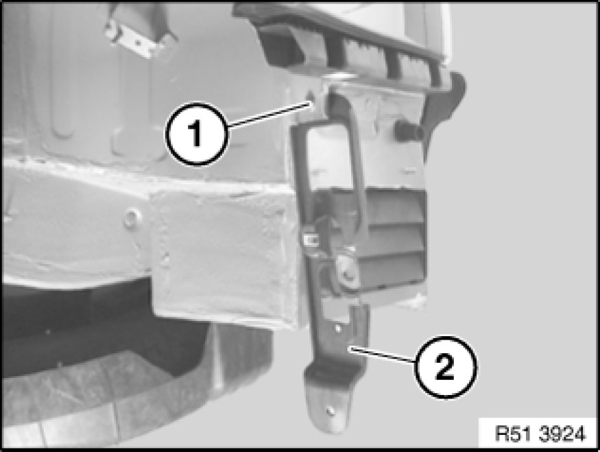
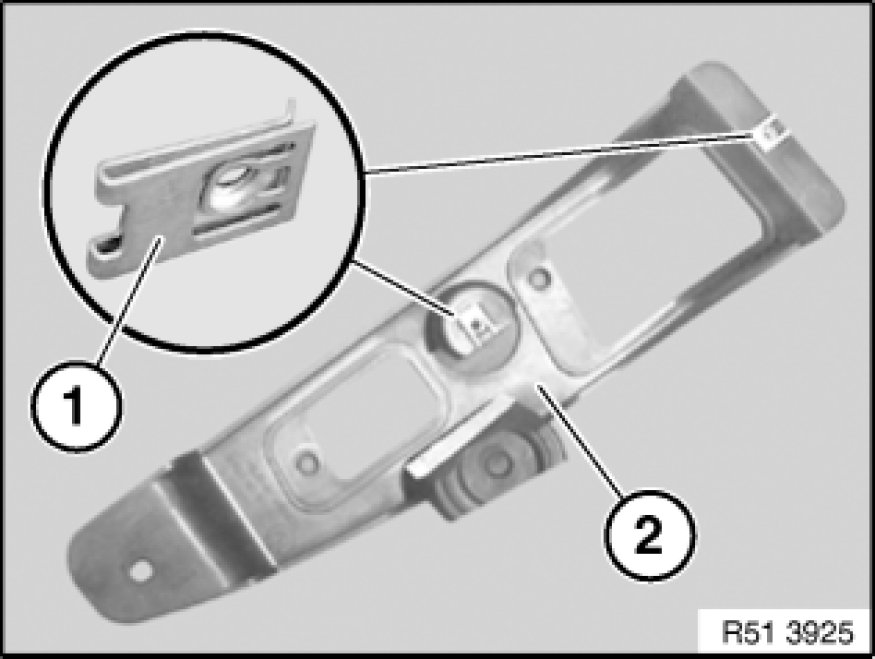

Rear Bumper Bracket: Service and Repair
51 12 801 - Replacing bracket for rear bumper at left or right

Necessary preliminary tasks:
- Remove rear bumper trim

If necessary, disconnect plug connection at RDC trigger transmitter.
Release screw (1) and remove bracket (2).

Installation:
If necessary, replace faulty metal nuts (1) on bracket (2).
Replacement:
If necessary, remove RDC trigger transmitter Removing and Installing/Replacing an RDC Trigger Transmitter (Rear).